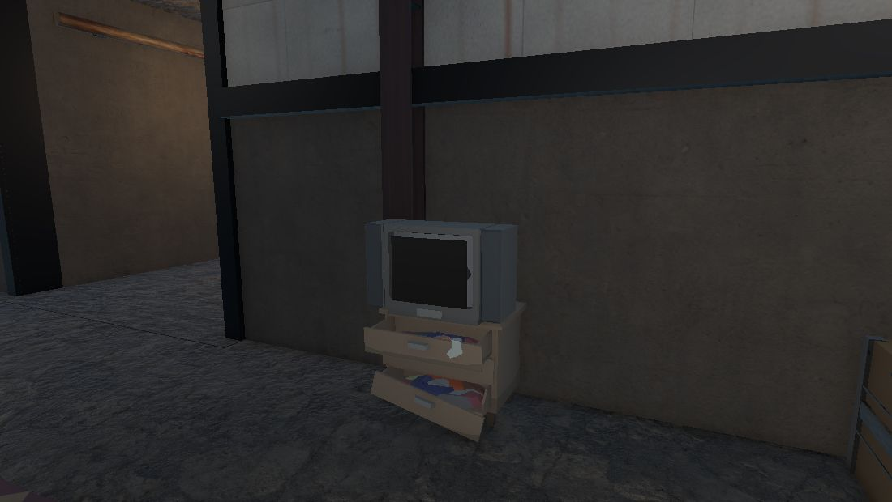

대기실 기획과 레벨 디자인
공연 뒤 돌아오는 로비를 허브로 두고 숙소, 상점, 소품실, 연습실과 무대 입구의 역할을 설계했습니다. 화장실 파괴벽에서 배관 구역을 거쳐 폐기물 보관소로 이어지는 숨은 동선을 문서화했습니다.
UNITY 6 · 2–4인 협동 · 2026
《커튼콜》에서 대기실과 탐색을 설계·구현하고, 프로젝트 전반의 에셋 관리 기준과 톤앤매너를 정리한 서민규의 작업 기록입니다. M1부터 M3까지 대기실의 역할과 플레이 경험이 어떻게 바뀌었는지 보여줍니다.
PROJECT OVERVIEW
《커튼콜》은 2~4명이 함께 서커스 공연을 치르고, 공연 사이 대기실을 탐색하며 탈출을 준비하는 협동 코미디 공포 게임입니다. 무대의 익살스러운 모습 뒤에 통제와 위험이 숨어 있습니다.
팀 게임의 전체 구성을 소개하고, 두 번째 탭에서 대기실·탐색 시스템·전반적인 에셋 관리와 톤앤매너에 대한 개인 기여를 구분해 기록합니다.
MY CONTRIBUTION
공연 뒤 돌아오는 로비를 허브로 두고 숙소, 상점, 소품실, 연습실과 무대 입구의 역할을 설계했습니다. 화장실 파괴벽에서 배관 구역을 거쳐 폐기물 보관소로 이어지는 숨은 동선을 문서화했습니다.
조사·획득·UV 발견·머리핀 개방·파괴·암호·협력 문 등 기능을 실제 방과 연결하고, 막히거나 닿지 않는 기물의 위치와 판정을 수정했습니다. 초기 열쇠 연쇄는 이후 변경된 기획이므로 현재 방식으로 소개하지 않습니다.
캐릭터, 환경, 소품, UI, 사운드 등 후보를 테마·그래픽·Unity 적용·라이선스 기준으로 검수하고, 채택·보류·반려 사유와 적용 상태를 기록했습니다. 공간별 기물 목록과 제작 후보도 정리했습니다.
로우폴리 스타일라이즈드 3D를 기준으로 낡은 천·녹슨 금속·바랜 벽면의 재질, 서커스의 따뜻한 빨강·노랑과 차가운 시설 조명의 대비를 정의했습니다. 귀여운 외형과 불편한 공간의 간극을 에셋 선별 기준에 반영했습니다.
공유 계정의 커밋 작성자만으로 개인 기여를 판별하지 않았습니다. 아래 작업노트·기획서와 당시 구현 기록을 기준으로 서술했습니다.
 개발 빌드 캡처 · 디버그 표시 포함
개발 빌드 캡처 · 디버그 표시 포함M1 · 2026.10
공연 후 휴식·정비·다음 준비가 일어나는 거점으로 대기실을 기획했습니다. 로비, 숙소, 상점, 소품실, 무대 입구 통로의 기본 구조와 역할을 잡았습니다.
초기 기획에서 대기실을 쉬는 곳이면서 이전 단원의 흔적과 탈출 가능성을 발견하는 장소로 정의했습니다. 제안 단계의 조작 수치와 공간안은 완성 기능으로 표시하지 않습니다.
근거: 대기실 2차 기획서 · M1 제출 문서
M2 · 2026.11
대기실을 탐색 가능한 공간으로 확장하고, 첫날의 쉬는 시간과 밤 정비에서 필요한 행동을 화면과 카메라로 안내했습니다.
작업 기록에는 튜토리얼 안내 24개와 문구 파일화가 남아 있습니다. 자동 검사와 사람 플레이 확인 범위는 구분해 제시합니다.
근거: M2 대기실 작업 기록 · 튜토리얼 화면 가이드 · 기물 제작 후보 문서
M3 · 2026.11
초기 열쇠 중심 탐색을 실제 공간에 배치해 검증했습니다. 이후 팀은 벽 파괴, 배선 절단, 협력 이동을 중심으로 경로를 확장했습니다.
M3는 팀이 확장한 대기실의 현재 모습을 보여줍니다. 개인 작업으로 확인되는 내용과 팀의 후속 구현을 구분했습니다.

근거: M3 대기실 변경안 · 대기실 기물·오브제 기획서
WORK NOTES
M3 내용은 팀이 발전시킨 현재 대기실의 모습을 포함합니다. 문서의 작성자와 구현 담당자가 다른 항목은 개인 제작 결과로 합산하지 않았습니다.
MY WORK
공연 사이에 반복해서 돌아오는 거점. 휴식과 준비, 탐색이 같은 장소에서 일어나도록 공간의 역할을 나눴습니다.
서커스 장비와 이전 단원의 소품을 공간별로 분류하고 제작·배치·미제작 상태를 기록했습니다. 후보의 스타일·Unity 적용·라이선스도 검수 기준에 넣었습니다.
로우폴리 스타일라이즈드 3D와 낡은 천·벽 표면을 기준으로 삼았습니다. 서커스 빨강·노랑과 차가운 배경, 따뜻한 전구색을 조합해 시선을 이끌도록 정리했습니다.
M1은 공간 구성 도식, M2·M3는 개발 화면으로 보여줍니다. 같은 위치의 전후 장면을 확보하면 화면을 보강합니다.
이 페이지는 대기실과 에셋·톤앤매너 작업에 집중합니다. 공연과 탈출로의 설계·구현은 개인 작업으로 표시하지 않습니다.
근거: 대기실 기획서, 탐색 시스템 작업노트, 에셋 검수 기준, 톤앤매너 문서. M1은 구성 도식이며 M2·M3는 디버그 표시가 포함된 개발 화면입니다.
PLAYTEST & ITERATION
공개할 플레이 영상을 받으면 이 자리에 삽입합니다.
2026년 10월 23일 플레이테스트의 설문과 플레이 로그를 분석했습니다. 첫날 밤 설문 18건과 종료 설문 11건은 서로 다른 응답 집합이며, 아래 수치는 각 문항의 응답 건수입니다.
첫날 밤 설문에서 ‘무엇을 해야 하는지’를 불편 항목으로 선택.
종료 설문에서 쉬는 시간의 이동·탐색을 지루한 구간으로 선택.
종료 설문에서 구매·정비 구간을 지루한 구간으로 선택.
근거: ‘1차 빌드 플레이테스트 분석’, ‘M2 대기실 작업 기록’, ‘대기실 탐색 오브젝트 구현 작업노트’.